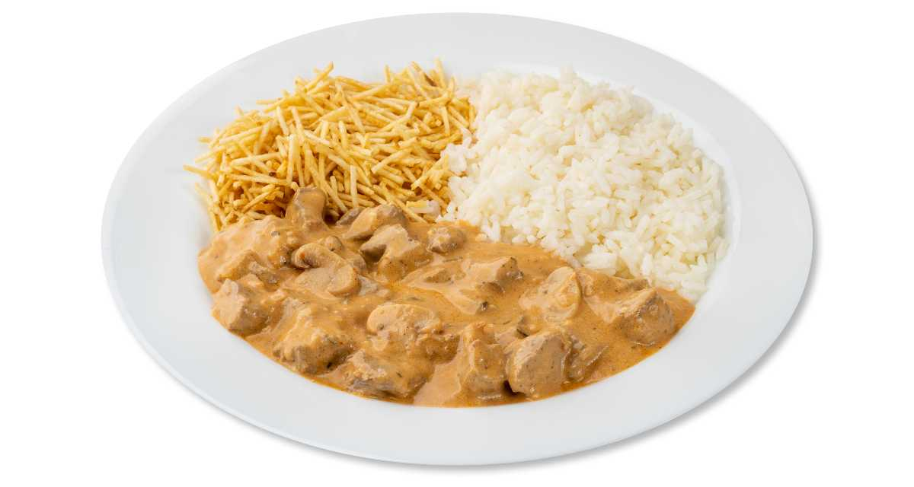

Strogonoff
Ingredientes
3 peitos de frango cortados em cubos
sal a gosto
1 cebola picada
1 colher de manteiga
1/3 copo de mostarda
1 copo de creme de leite
1 dente de alho picado
pimenta-do-reino a gosto
2 colheres (sopa) de maionese
1/2 copo de ketchup
1 copo de cogumelos
batata palha a gosto
Modo de Preparo